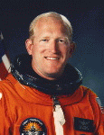

Lyndon B. Johnson Space Center
Houston, Texas 77058
|
National Aeronautics and Space Administration Lyndon B. Johnson Space Center Houston, Texas 77058 |
 |
Biographical Data |
||
Charles D. (nickname Sam) Gemar (Lieutenant Colonel, USA)
NASA Astronaut (former)
PERSONAL DATA: Born August 4, 1955 in Yankton, South Dakota, but home is Scotland, South Dakota, where his parents, Mr. & Mrs. Leighton A. Gemar, reside. Married to the former Charlene Stringer of Savannah, Georgia. They have two children. He enjoys water sports, jogging, woodworking, and travel.
EDUCATION: Graduated from Scotland Public High School, Scotland, South Dakota, in 1973; received a bachelor of science degree in engineering from the U. S. Military Academy in 1979.
ORGANIZATIONS: United States Military Academy Association of Graduates; Army Aviation Association of America; Association of Space Explorers-USA; Mount Rushmore National Monument Preservation Society; Nassau Bay Volunteer Fire Department.
SPECIAL HONORS: Gemar was Distinguished Graduate of his class in undergraduate pilot training, and Distinguished Graduate of his class in graduate fixed-wing and multi-engine pilot training. Recipient of the Defense Superior Service Medal, Defense Meritorious Service Medal, Army Commendation Medal, Army Achievement Medal, Good Conduct Medal, two National Defense Service Medals, National Intelligence Medal of Achievement, NASA Achievement Medal, and three NASA Space Flight Medals. Honorary Doctor of Engineering from the South Dakota School of Mines and Technology. Honorary Chair for Membership of the South Dakota Congress of Parents and Teachers. Member of South Dakota Aviation Hall of Fame. Recipient of South Dakota Newspaper Association 1993 Distinguished Service Award.
EXPERIENCE: Gemar enlisted in the Army in January 1973 and reported for duty on June 11, 1973. In November 1973, he was assigned to the 18th Airborne Corps at Ft. Bragg, North Carolina, where he received an appointment to the U.S. Military Academy Preparatory School at Ft. Belvoir, Virginia, and later a Department of the Army appointment to join the U.S. Military Academy Class of 1979. After graduation he attended the Infantry Officers Basic Course at Ft. Benning, Georgia, the Initial Entry Rotary Wing Aviation Course and the Fixed Wing Multi-Engine Aviators Course, both at Ft. Rucker, Alabama. In October 1980, he transferred to the 24th Infantry Division, Ft. Stewart, Georgia, where he remained until January 1, 1985. While at Ft. Stewart/Hunter Army Airfield he served as an Assistant Flight Operations Officer and Flight Platoon Leader for the 24th Combat Aviation Battalion, Wright Army Airfield Commander, and Chief, Operations Branch, Hunter Army Airfield. Other military schools completed include the Army Parachutist Course, Ranger School, Aviation Officers Advanced Course, and the Defense Systems Management College.
NASA EXPERIENCE: Selected by NASA in June 1985, Gemar completed a one-year training and evaluation program and became an astronaut in July 1986. He is qualified for assignment as a mission specialist on future Space Shuttle flight crews. Since then he has held a variety of technical assignments in support of the Space Shuttle Program including: flight software testing in the Shuttle Avionics Integration Laboratory (SAIL); launch support activities at the Kennedy Space Center; spacecraft communicator (CAPCOM) in mission control during Space Shuttle missions; Chief of Astronaut Appearances. Gemar has flown three times and has logged over 580 hours in space. He flew on STS-38 (November 15-20, 1990), STS-48 (September 12-18, 1991), and STS-62 (March 4-18, 1994).
In January 1996, LTC Gemar was detailed to the Office of the Under Secretary of Defense (Acquisition and Technology) where he is the Director, National Security Space Master Plan Task Force. The multi-disciplinary task force is charged with identifying the long-range strategic goals for the national security space community. This unprecedented National Security Space Master Plan is the first step in developing a coordinated, comprehensive, integrated, long-term strategy for national security space programs and activities.
SPACE FLIGHT EXPERIENCE: STS-38 Atlantis (November 15-20-1990) was launched from the Kennedy Space Center, Florida and returned to land there, in the first Shuttle recovery in Florida since 1985. During the mission the five-man crew conducted Department of Defense operations. The mission concluded after 80 orbits of the Earth in 117 hours.
STS-48 Discovery (September 12-18, 1991) launched from the Kennedy Space Center, Florida, and returned to land at Edwards Air Force Base, California. During 81 orbits of the Earth, the crew successfully deployed the Upper Atmosphere Research Satellite (UARS), designed to study the Earth’s upper atmosphere on a global scale thus providing scientists with their first complete data set on the upper atmosphere’s chemistry, winds and energy inputs, in addition to conducting numerous secondary experiments ranging from growing protein crystals, to studying how fluids and structures react in weightlessness. Mission duration was 128 hours.
STS-62 Columbia (March 4-18, 1994) launched from and returned to land at Kennedy Space Center, Florida. This microgravity science and technology demonstration mission carried the United States Microgravity Payload (USMP-2) and the Office of Aeronautics and Space Technology (OAST-2) payloads. Sixty experiments or investigations were conducted in many scientific and engineering disciplines including materials science, human physiology, biotechnology, protein crystal growth, robotics, structural dynamics, atmospheric ozone monitoring and spacecraft glow. During the spacecraft glow investigation, Columbia's orbital altitude was lowered to 105 nautical miles, the lowest ever flown by a Space Shuttle. STS-62, the second longest Space Shuttle mission to date, concluded following 224 orbits of the Earth in 13 days, 23 hours, and 16 minutes.
MARCH 1997
This is the only version available from NASA. Updates must be sought direct from the above named individual.
{kind=link}